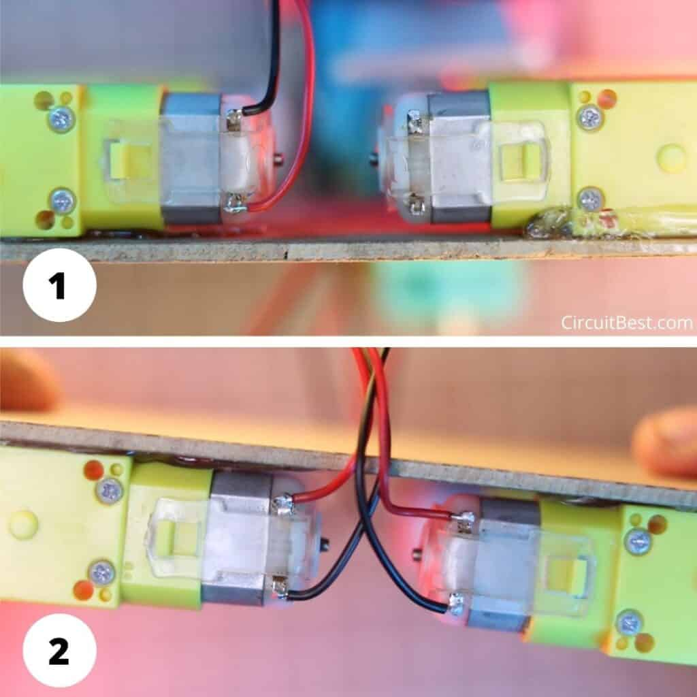
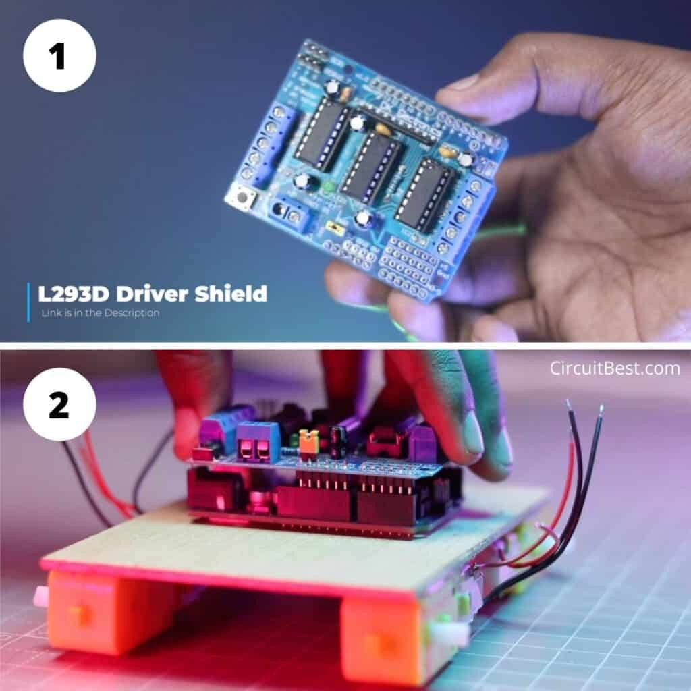
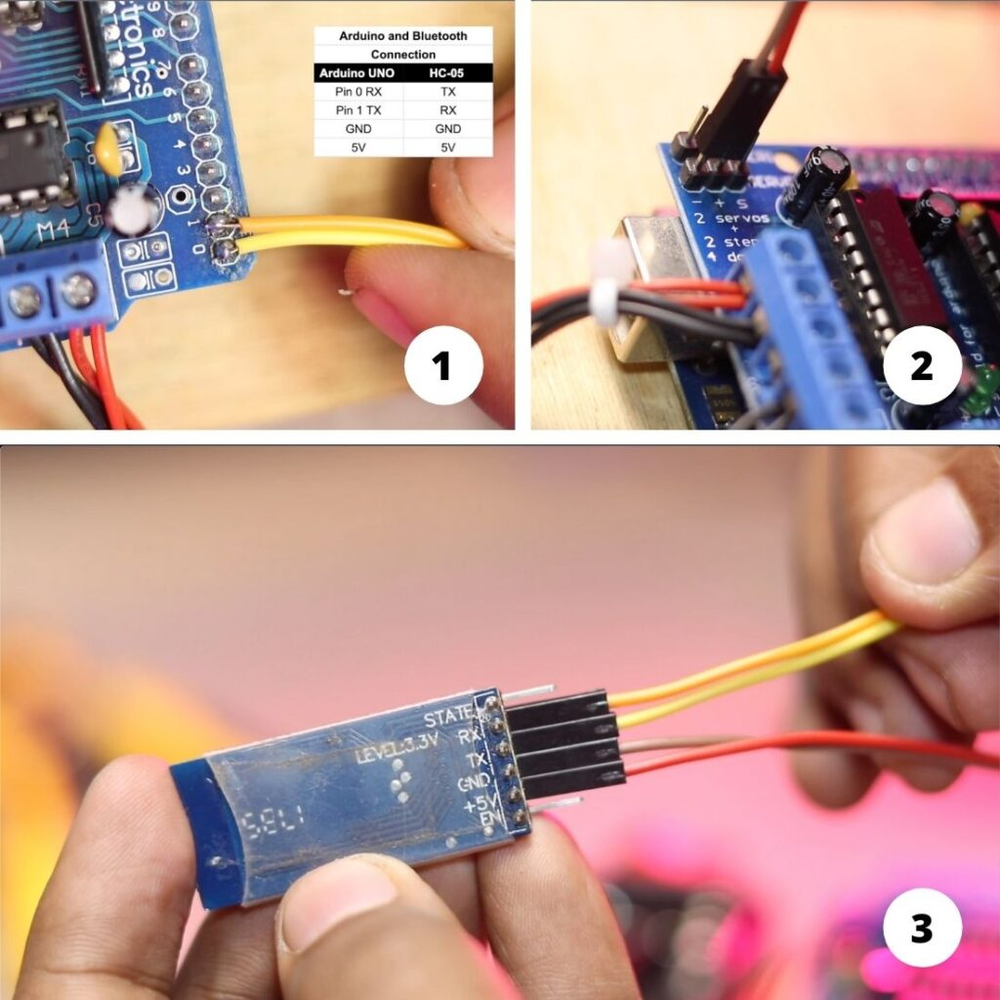
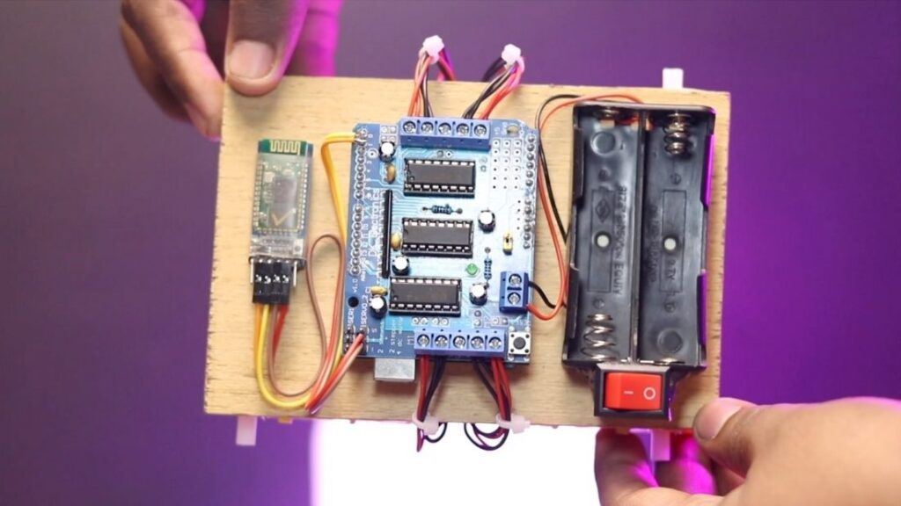

El carro a control remoto es un mecanismo integrado por componentes eléctricos y mecánicos, que le permiten desplazarse hacia adelante y hacia atrás.Está diseñado para moverse conforme a un sistema de circuitos y motores que le indican haciaqué dirección debe moverse, pudiendo ser hacia adelante o hacia atrás. Funciona gracias a 2motores, uno le permiten avanzar hacia adelante y el otro retroceder.Las llantas del carro se mueven en sentido contrario y los motores se activan de manerainversa, (cuando uno opera el otro está inactivo) la encargada de hacer el carrito avanzar es lacarga positiva y quien se encarga de hacerlo retroceder es la carga negativa.
En primer lugar, necesitaremos motores. para hacer. el coche. Como mínimo, puede usar 2 motores para los lados izquierdo y derecho, pero en este proyecto, estamos usando 4 motores de engranajes de CC. Más específicamente, aquí estamos usando 300 RPM 9v TT Gear Motor para hacer Arduino Bluetooth car l293d .
Ahora tenemos que soldar los cables para encender los motores. Estoy usando cables rojo y negro para la conexión. Si está haciendo un automóvil de control móvil con Arduino , entonces le sugiero que haga las mismas conexiones de cableado que se muestran en la imagen.
Para hacer un auto bluetooth con control de velocidad estamos usando Arduino UNO. Este tablero es el Corazón principal del Proyecto.
Ahora tenemos que conectar el Arduino UNO al Chasis. Entonces, estoy usando cinta adhesiva de doble cara para esto. También puede taladrar agujeros en el chasis y conectar la placa Arduino con tornillos M3.
Ahora he conectado el Arduino con el chasis y esto se verá como se muestra en la imagen y hará que el automóvil controlado por Arduino Bluetooth con luces delanteras y traseras.

Ahora, para hacer una aplicación de control de automóvil Arduino Bluetooth, necesitaremos un receptor inalámbrico. Para la transmisión de señal inalámbrica al automóvil aquí estamos utilizando el Módulo Bluetooth HC-05. Este es un módulo comúnmente utilizado para realizar diferentes tipos de proyectos de transmisión de señales inalámbricas.
Ahora tenemos que subir el código al Arduino UNO. Entonces, conectaremos el USB poet de Arduino UNO con el puerto COM de la PC. Primero. Ahora, si está utilizando Arduino original que está etiquetado como "Hecho en Italia", entonces no necesitará ninguna modificación. Si está utilizando un clon chino con chip SMD montado en el Arduino, lo más probable es que tenga que instalar el controlador CH340 . Aquí estamos usando la biblioteca de escudos de Arafruit Motor para ejecutar el automóvil controlado por Bluetooth. Por lo tanto, debe ir a lo siguiente y luego buscar la biblioteca Adafruit Motor Shield.
A partir de este divertido proyecto, entendemos cómo, básicamente, un automóvil controlado por Bluetooth con luces delanteras y traseras se ha hecho en la vida real con Arduino. Aquí puede obtener un vasto conocimiento de electrónica de este proyecto. Si eres una persona entusiasta de la electrónica, definitivamente deberías probar este proyecto en tu hogar. Te sugiero que sigas el canal de YouTube "Make DIY" con más contenido increíble como este.